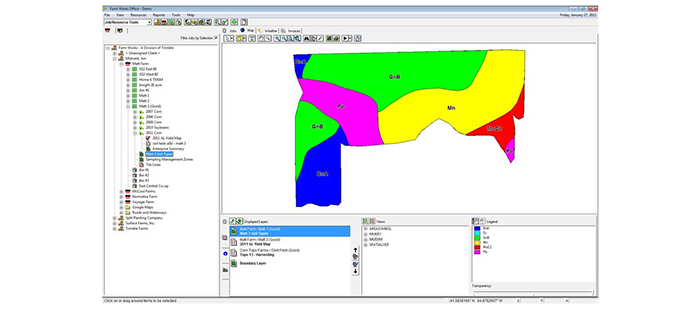
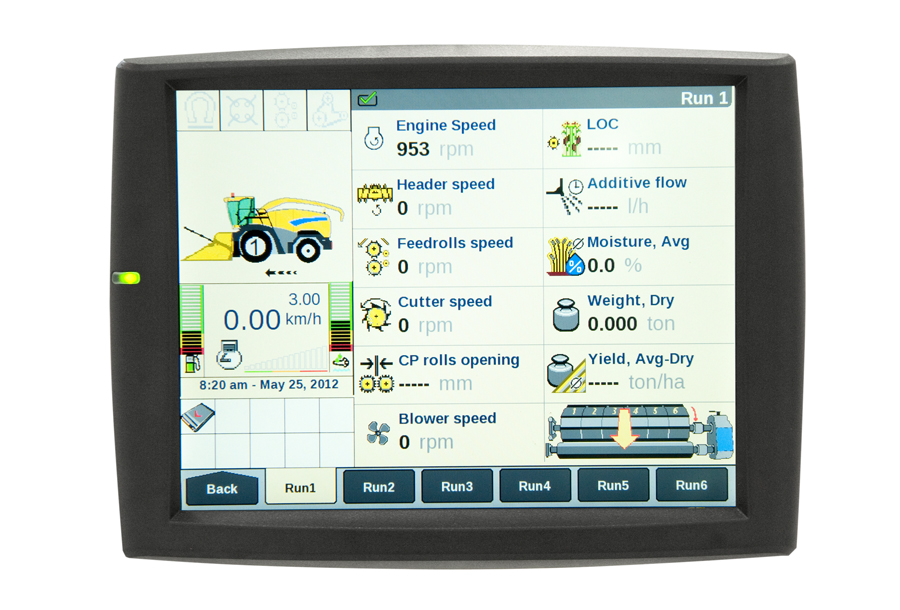

Tanto no cenário atual quanto em uma
perspectiva futurística, o mercado robótico no campo tende a trazer resultados cada
vez mais satisfatórios e empolgantes. As renomadas marcas Case IH e New Holland
Agriculture por exemplo, trouxeram para as lavouras um modelo de trator
que remonta a visão atual do que é plantar, reduzindo cada vez mais a mão
de obra braçal humana, sendo substituída pela robótica.
|
A máquina faz uso de câmeras para obter imagens de cada item a
ser futuramente colhido, classifica e adiciona as condições climáticas
daquele momento,caso começar a chover os sensores registrarão a
mudança climática e o trator automaticamente se desloca para um
terreno de solo seco, enviando relatórios constantemente para o dono da
lavoura. Em outra aplicação, o mesmo robô pode analisar as condições
de solo utilizando pontos de mesma distância e horário. Os erros de
medição do sistema estão na casa dos milímetros, ou seja, a nova
tecnologia apresenta resultados extremamente precisos, o protótipo pode
fazer basicamente tudo sozinho e enviando relatórios para o dono da
lavoura.
|
|  |
 |
Voltar a página principal |